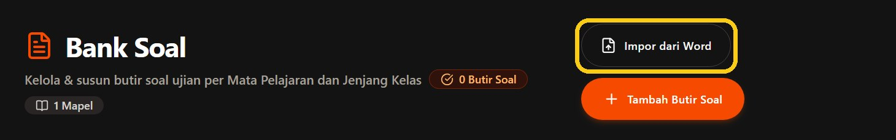
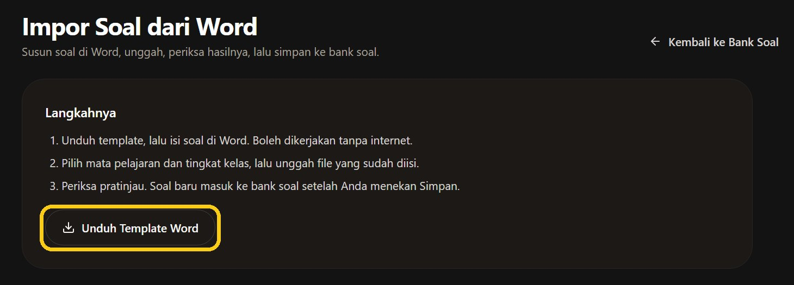
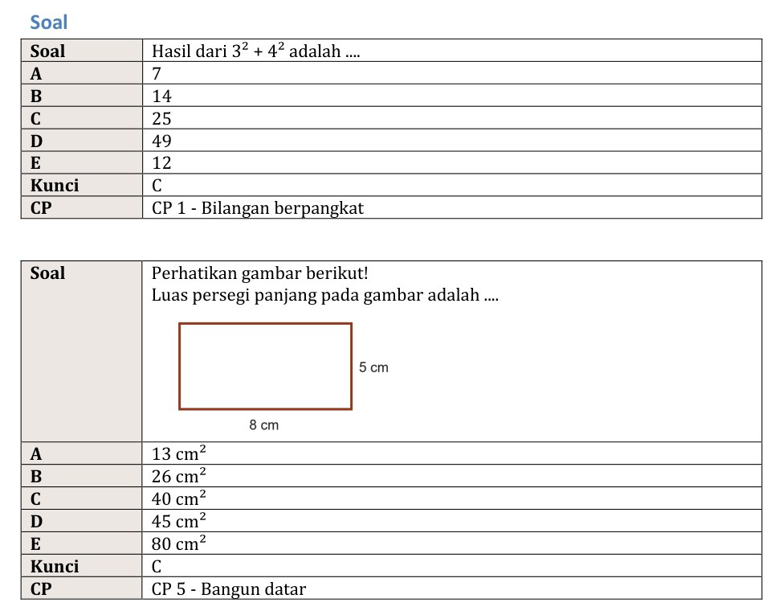
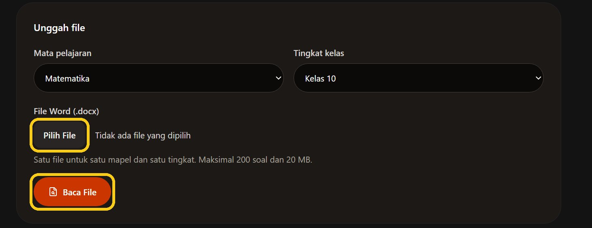
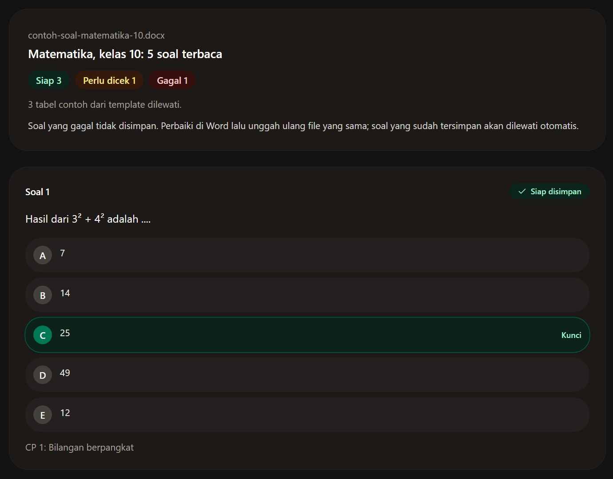
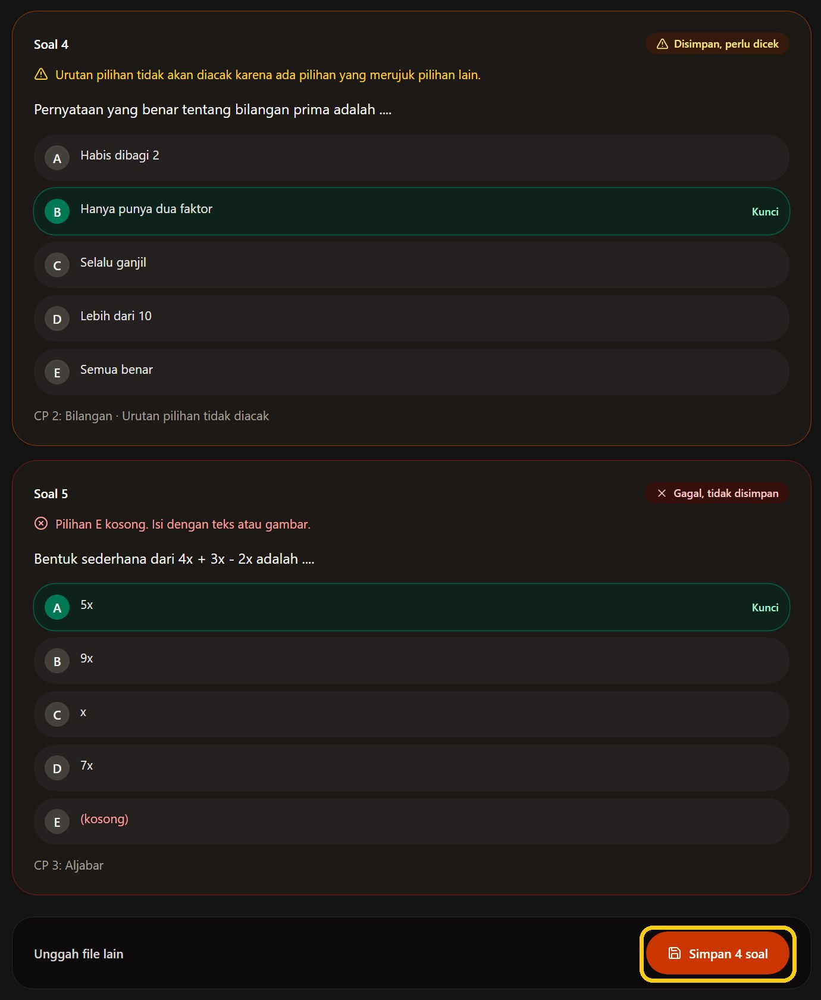
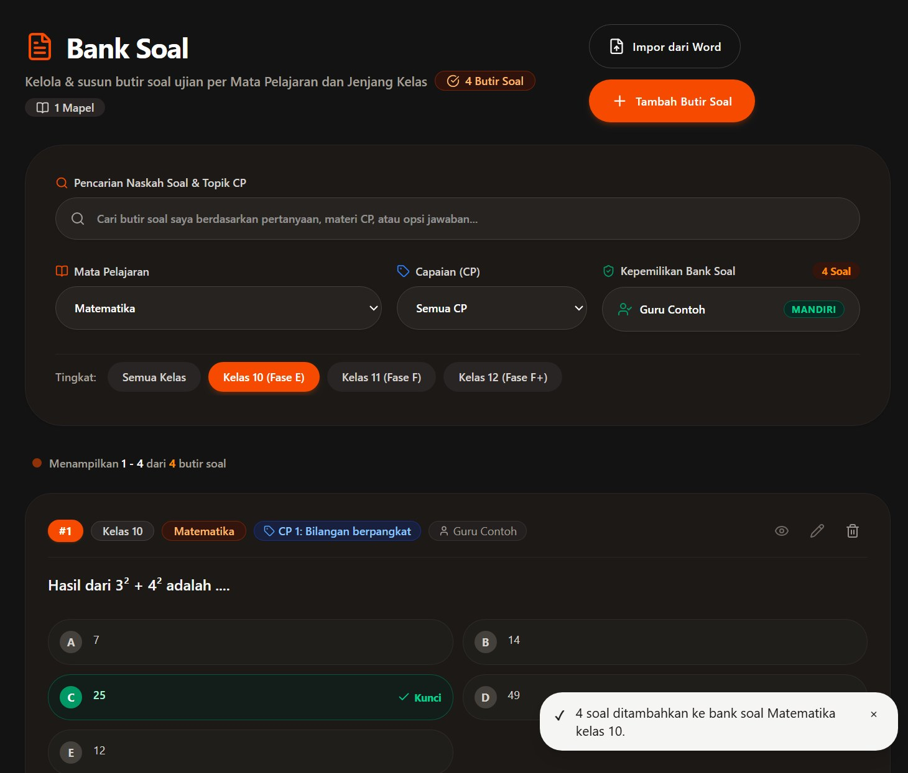

Soal bisa dimasukkan ke Exam lewat file Word, jadi tidak perlu diketik satu per satu di aplikasi. Soal diketik di template Word (boleh tanpa internet), lalu diunggah sekali. Gambar yang ditempel di Word ikut masuk.
1. Buka halaman impor
Buka menu Bank Soal di Exam, lalu klik Impor dari Word.

2. Unduh template
Klik Unduh Template Word. Template cukup diunduh sekali dan bisa dipakai berulang kali.

3. Isi template di Word
Satu tabel untuk satu soal. Isi Soal, pilihan A sampai E, Kunci (satu huruf), dan CP kalau ada. Jangan mengubah tulisan di kolom kiri. Untuk menambah soal, salin satu tabel kosong lalu tempel di bawahnya. Gambar boleh ditempel langsung di sel Soal atau di sel pilihan.

Contoh isian. Soal kedua memakai gambar dan tetap punya kalimat pertanyaan.
4. Unggah file
Kembali ke halaman impor. Pilih mata pelajaran dan tingkat kelas, klik Pilih File, pilih file Word yang sudah diisi, lalu klik Baca File.

5. Periksa hasilnya
Exam menampilkan semua soal yang terbaca. Pada tahap ini soal belum masuk ke bank soal. Cocokkan teks, gambar, dan kunci (pilihan yang berwarna hijau).

Arti tanda di hasil pemeriksaan
Siap disimpan
Soal terbaca dengan benar.
Disimpan, perlu dicek
Soal ikut tersimpan, tetapi baca catatan kuningnya.
Gagal, tidak disimpan
Baca catatan merahnya, perbaiki di Word, lalu unggah ulang file yang sama. Soal yang sudah tersimpan tidak akan dobel.
Sudah ada
Soal itu sudah ada di bank soal Bapak/Ibu, jadi dilewati.
6. Simpan
Klik Simpan di bagian bawah. Angka di tombol adalah jumlah soal yang akan disimpan. Soal yang gagal tidak ikut.

Soal 4 tetap disimpan dengan catatan. Soal 5 gagal karena pilihan E kosong.
7. Soal masuk ke Bank Soal
Muncul pesan jumlah soal yang ditambahkan. Urutan soal di Bank Soal sama dengan urutan di file Word.

Yang perlu diperhatikan
Satu file untuk satu mapel dan satu tingkat kelas, maksimal 200 soal dan 20 MB.
Soal bergambar tetap harus ada kalimat pertanyaannya, misalnya "Perhatikan gambar berikut! Benda pada gambar digunakan untuk ....".
Semua pilihan A sampai E wajib diisi, boleh teks atau gambar. Satu sel hanya memakai satu gambar.
Simbol yang diketik biasa (x², √, ½, °) terbaca apa adanya. Rumus yang rumit dan tabel di dalam soal ditempel sebagai gambar.
File harus berformat .docx. Kalau masih .doc, buka di Word lalu Simpan Sebagai .docx.
Tombol Impor dari Word hanya muncul untuk guru yang sudah punya pembagian tugas mengajar. Kalau tombolnya tidak ada, hubungi kurikulum.